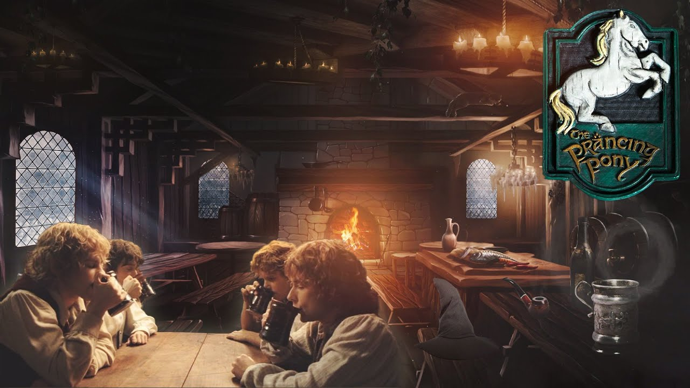
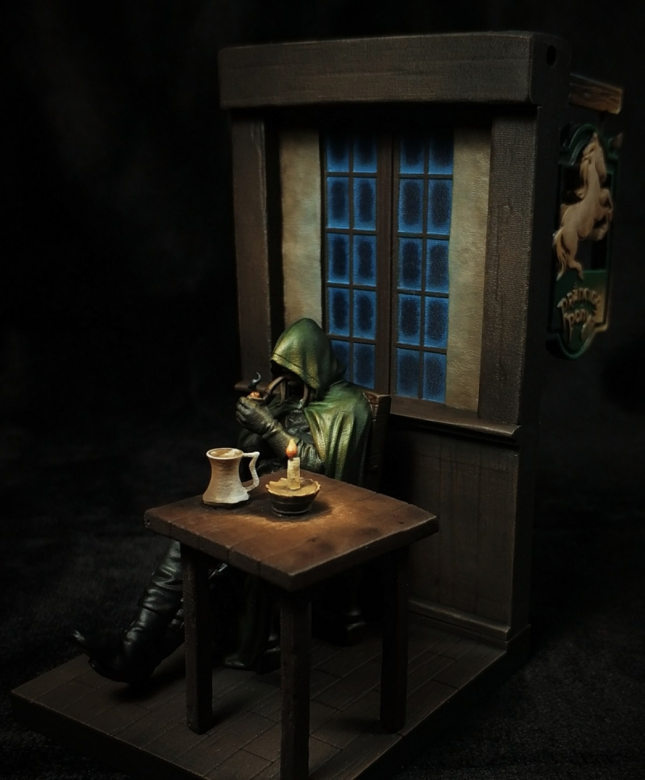

The Sign of the Prancing Pony
We arrive at Bree, the chief village of Bree-land, according to legend, the folk there descended from the first men that arrived in the middle-world.
Beyond west of Bree were mysterious wanderers from wild lands. Rangers, they were called. Those men were bigger and taller with strange abilities and enhanced hearing and sight. My memory is hazy, but could Aragorn have been a ranger?
Of Bree-land there were four villages, Bree, Staddle to the other side of the hill, Combe in the Valley, and Archet by the fields and woodlands.
Our quartet of Little Folk (as hobbits are called in Bree and men are called Big folk) arrive at he gate. After questioning by the guard they are let in. Both parties feel suspicious and on edge. There have been strange happenings lately and four hobbits from the Shire arriving in the dark of night is a most peculiar situation.
They arrive at the Prancing Pony, ownd by Barliman Butterbur. On this particular night the Prancing Pony housing multiple parties of people, a group from Greenway, a company of dwarves, and now a gaggle of hobbits.
Once settled in the rooms with their beer and supper prepped, all our hobbits but Merry go to meet the other travelers and locals that have set up in the lobby of the inn.
After introductions, Frodo (using Underhill as a fake name) explains that he is here to learn geography and history beyond the Shire, they learn what the other travelers are up to.
The men from the south share disturbing news. They are on the move, looking to settle down away from the dangers and looming threats in the south. Expect more displaced families to settle down here or further north they claim.
Good golly miss molly, is that an Aragorn appearance? Mr. Butterbur explains the mysterious man is a ranger and he comes and goes through this Inn many times a year. No one knows his name, but he is known as ‘Strider’
I confess, if I had had previous knowledge from the movies, I would be highly suspicious of this man to be a black rider in secret.
Strider gives good advice, the hobbits are too comfortable sharing funny tales from the Shire. Entertaining the locals and travelers, Pippin and Sam are having a blast. Pippin begins telling the story of Bilbo’s last birthday feast where he puts on the ring to disappear. Benign as the folk be in the Inn presently, this is not the story to share with strangers. ‘Do something!’ Strider urges Frodo.
Frodo leaps into action with a few words of gratitude for the people at the tavern. Embarrassed by his outburst Frodo fidgets with the ring, wanting to disappear. The audience cheers for a song, a song, and Frodo delivers one that Bilbo taught him. It’s like a Lotr version of ‘Hey diddle diddle, the cat and fiddle, the cow jumped over the moon’ song.
Tolkien sure loves music and songs doesn’t he? This song is two pages long. When you guys read songs in text, do you sing them in your head? Do you make up a melody?
The crowd loves it. They cheer for an encore and Frodo relents. Lost in his excitement he falls and disappears! Somehow his finger slipped on the ring. Or does the ring have machinations to be found and brought to its original owner, Sauron?
The audience gasps, bewildered and astonished. A local Bree-lander and a southerner who had been making quiet talk in the back looked suspiciously and left the inn. A most troubling outcome now that it seems news of the Ring will spread to the dark lord.
Strider calls Frodo to talk privately later. The situation has turned a mess, and the inhabitants of the inn, untrusting of magic and shenanigans, glowered at the Shire hobbits. Many took to turn in for the night. Mr. Butterbur himself asks Frodo for a private word later, after he takes care of a few things. Frodo, afraid, fears perhaps Butterbur may be concealing his intentions, perhaps his disappearing act has caused enough alarm to upend the whole journey.
A most excellent chapter and the next chapter is titled ‘Strider’! Three chapters left in book 1 and I believe we are getting into the climax of this part. How soon can we meet Legolas and Gimli as well?